import pandas as pd
import numpy as np
import matplotlib.pyplot as plt
import seaborn as sns
from sklearn.model_selection import train_test_split
from sklearn.metrics import mean_absolute_error
from scipy import stats
from sklearn.model_selection import cross_val_score
from sklearn.model_selection import GridSearchCV
from sklearn.ensemble import RandomForestRegressor
from sklearn.preprocessing import StandardScaler
from sklearn.linear_model import LinearRegression
import warnings
warnings.filterwarnings('ignore')Zyfra - Optimizing Gold Recovery
Introduction
In the mining industry, extracting gold from ore is a complex process that requires multiple stages of purification and refinement. The efficiency of this process, measured by the recovery rate, is crucial for both economic and environmental reasons. This project focuses on developing a machine learning model to predict the recovery rate of gold during the purification process, using data collected from various stages of a gold recovery plant.
The dataset encompasses multiple parameters measured throughout the technological process, including concentrations of different metals (Au, Ag, Pb), particle sizes, and various other features recorded at different stages of purification. These measurements are time-stamped, creating a temporal dimension to our analysis that could reveal important patterns in the recovery process.
The primary objective is to create a model that can accurately predict the recovery rate of gold, which will help optimize the purification process and reduce production costs.
The project’s success will be measured using the Symmetric Mean Absolute Percentage Error (sMAPE), providing a balanced assessment of our model’s predictive capabilities.
# Load the datasets
train_df = pd.read_csv('../datasets/gold_recovery_train.csv')
test_df = pd.read_csv('../datasets/gold_recovery_test.csv')
full_df = pd.read_csv('../datasets/gold_recovery_full.csv')
# Display basic information about the datasets
print("Dataset shapes:")
print(f"Training set: {train_df.shape}")
print(f"Test set: {test_df.shape}")
print(f"Full set: {full_df.shape}\n")
# Display first few rows of training data
print("First few rows of training data:")
train_df.head()Dataset shapes:
Training set: (16860, 87)
Test set: (5856, 53)
Full set: (22716, 87)
First few rows of training data:| date | final.output.concentrate_ag | final.output.concentrate_pb | final.output.concentrate_sol | final.output.concentrate_au | final.output.recovery | final.output.tail_ag | final.output.tail_pb | final.output.tail_sol | final.output.tail_au | ... | secondary_cleaner.state.floatbank4_a_air | secondary_cleaner.state.floatbank4_a_level | secondary_cleaner.state.floatbank4_b_air | secondary_cleaner.state.floatbank4_b_level | secondary_cleaner.state.floatbank5_a_air | secondary_cleaner.state.floatbank5_a_level | secondary_cleaner.state.floatbank5_b_air | secondary_cleaner.state.floatbank5_b_level | secondary_cleaner.state.floatbank6_a_air | secondary_cleaner.state.floatbank6_a_level | |
|---|---|---|---|---|---|---|---|---|---|---|---|---|---|---|---|---|---|---|---|---|---|
| 0 | 2016-01-15 00:00:00 | 6.055403 | 9.889648 | 5.507324 | 42.192020 | 70.541216 | 10.411962 | 0.895447 | 16.904297 | 2.143149 | ... | 14.016835 | -502.488007 | 12.099931 | -504.715942 | 9.925633 | -498.310211 | 8.079666 | -500.470978 | 14.151341 | -605.841980 |
| 1 | 2016-01-15 01:00:00 | 6.029369 | 9.968944 | 5.257781 | 42.701629 | 69.266198 | 10.462676 | 0.927452 | 16.634514 | 2.224930 | ... | 13.992281 | -505.503262 | 11.950531 | -501.331529 | 10.039245 | -500.169983 | 7.984757 | -500.582168 | 13.998353 | -599.787184 |
| 2 | 2016-01-15 02:00:00 | 6.055926 | 10.213995 | 5.383759 | 42.657501 | 68.116445 | 10.507046 | 0.953716 | 16.208849 | 2.257889 | ... | 14.015015 | -502.520901 | 11.912783 | -501.133383 | 10.070913 | -500.129135 | 8.013877 | -500.517572 | 14.028663 | -601.427363 |
| 3 | 2016-01-15 03:00:00 | 6.047977 | 9.977019 | 4.858634 | 42.689819 | 68.347543 | 10.422762 | 0.883763 | 16.532835 | 2.146849 | ... | 14.036510 | -500.857308 | 11.999550 | -501.193686 | 9.970366 | -499.201640 | 7.977324 | -500.255908 | 14.005551 | -599.996129 |
| 4 | 2016-01-15 04:00:00 | 6.148599 | 10.142511 | 4.939416 | 42.774141 | 66.927016 | 10.360302 | 0.792826 | 16.525686 | 2.055292 | ... | 14.027298 | -499.838632 | 11.953070 | -501.053894 | 9.925709 | -501.686727 | 7.894242 | -500.356035 | 13.996647 | -601.496691 |
5 rows × 87 columns
Recovery Calculation Function
\[ Recovery = \frac{C \times (F-T)}{F \times (C-T)} \times 100\% \]
- C — share of gold in the concentrate right after flotation (for finding the rougher concentrate recovery)/after purification (for finding the final concentrate recovery)
- F — share of gold in the feed before flotation (for finding the rougher concentrate recovery)/in the concentrate right after flotation (for finding the final concentrate recovery)
- T — share of gold in the rougher tails right after flotation (for finding the rougher concentrate recovery)/after purification (for finding the final concentrate recovery)
def calculate_recovery(row, concentration_col, feed_col, tails_col):
C = row[concentration_col]
F = row[feed_col]
T = row[tails_col]
# Avoid division by zero
if F == 0 or (C - T) == 0:
return 0
recovery = C * (F - T) / (F * (C - T)) * 100
# Handle edge cases
if np.isnan(recovery) or np.isinf(recovery):
return 0
return recovery# Calculate recovery for rougher output
train_df['calculated_recovery'] = train_df.apply(
lambda row: calculate_recovery(
row,
'rougher.output.concentrate_au', # C
'rougher.input.feed_au', # F
'rougher.output.tail_au' # T
),
axis=1
)The inclusion of a valid_recovery_mask is a necessary feature in this step to calculate the mean absolute error while the filling step has yet to be conducted at this point, and the missing values will produce errors when running the MAE calculation.
valid_recovery_mask = (~train_df['rougher.output.recovery'].isna()) & (~train_df['calculated_recovery'].isna())
mae = mean_absolute_error(
train_df.loc[valid_recovery_mask, 'rougher.output.recovery'],
train_df.loc[valid_recovery_mask, 'calculated_recovery']
)
print(f"MAE between calculated and actual recovery: {mae:.2e}")MAE between calculated and actual recovery: 9.30e-15The extremely low Mean Absolute Error (MAE) of 9.30e-15 (effectively zero) confirms that our implementation of the recovery formula perfectly matches the existing recovery calculations in the dataset. This near-zero difference validates both our understanding of the recovery calculation process and the reliability of the provided data, ensuring a solid foundation for our subsequent modeling efforts.
total_rows = len(train_df)
valid_rows = valid_recovery_mask.sum()
nan_rows = total_rows - valid_rows
print(f"\nTotal rows: {total_rows}")
print(f"Rows with valid recovery values: {valid_rows}")
print(f"Rows with NaN values: {nan_rows}")
# Display a few rows with NaN values to understand the pattern
print("\nExample rows with NaN values:")
print(train_df[~valid_recovery_mask][['rougher.output.recovery', 'calculated_recovery']].head(10))
Total rows: 16860
Rows with valid recovery values: 14287
Rows with NaN values: 2573
Example rows with NaN values:
rougher.output.recovery calculated_recovery
53 NaN 188.742102
99 NaN 0.000000
100 NaN 0.000000
101 NaN 0.000000
102 NaN 0.000000
103 NaN 0.000000
104 NaN 0.000000
105 NaN 0.000000
106 NaN 0.000000
107 NaN 0.000000# Compare actual vs calculated recovery values
comparison_df = pd.DataFrame({
'Actual Recovery': train_df['rougher.output.recovery'],
'Calculated Recovery': train_df['calculated_recovery']
}).head(20)
print("\nComparison of first 10 rows:")
comparison_df
Comparison of first 10 rows:| Actual Recovery | Calculated Recovery | |
|---|---|---|
| 0 | 87.107763 | 87.107763 |
| 1 | 86.843261 | 86.843261 |
| 2 | 86.842308 | 86.842308 |
| 3 | 87.226430 | 87.226430 |
| 4 | 86.688794 | 86.688794 |
| 5 | 88.156912 | 88.156912 |
| 6 | 88.168065 | 88.168065 |
| 7 | 87.668336 | 87.668336 |
| 8 | 87.035862 | 87.035862 |
| 9 | 87.650868 | 87.650868 |
| 10 | 88.280699 | 88.280699 |
| 11 | 88.499117 | 88.499117 |
| 12 | 89.299981 | 89.299981 |
| 13 | 89.519701 | 89.519701 |
| 14 | 87.235441 | 87.235441 |
| 15 | 85.136294 | 85.136294 |
| 16 | 85.443505 | 85.443505 |
| 17 | 86.489827 | 86.489827 |
| 18 | 85.462226 | 85.462226 |
| 19 | 86.241795 | 86.241795 |
The identical values across both columns (ranging from approximately 85% to 89% recovery rates) further confirms the perfect alignment between our calculated recovery values and the actual recorded values in the dataset.
missing_in_test_count = 0
# Analyze missing features
train_columns = set(train_df.columns)
test_columns = set(test_df.columns)
missing_in_test = train_columns - test_columns
# Get feature types for missing columns
print("\nFeatures missing in test set:")
for col in missing_in_test:
missing_in_test_count += 1
print(f"- {col} (Type: {train_df[col].dtype})")
print("\n")
print('Number of columns missing in test set: ', missing_in_test_count)
Features missing in test set:
- final.output.concentrate_ag (Type: float64)
- primary_cleaner.output.tail_pb (Type: float64)
- rougher.calculation.floatbank11_sulfate_to_au_feed (Type: float64)
- rougher.calculation.floatbank10_sulfate_to_au_feed (Type: float64)
- rougher.output.tail_sol (Type: float64)
- rougher.output.concentrate_sol (Type: float64)
- final.output.tail_ag (Type: float64)
- primary_cleaner.output.concentrate_ag (Type: float64)
- rougher.calculation.sulfate_to_au_concentrate (Type: float64)
- rougher.output.tail_pb (Type: float64)
- primary_cleaner.output.tail_ag (Type: float64)
- calculated_recovery (Type: float64)
- rougher.calculation.au_pb_ratio (Type: float64)
- secondary_cleaner.output.tail_sol (Type: float64)
- secondary_cleaner.output.tail_au (Type: float64)
- secondary_cleaner.output.tail_pb (Type: float64)
- primary_cleaner.output.concentrate_sol (Type: float64)
- final.output.concentrate_sol (Type: float64)
- primary_cleaner.output.tail_au (Type: float64)
- final.output.tail_sol (Type: float64)
- rougher.output.recovery (Type: float64)
- primary_cleaner.output.concentrate_au (Type: float64)
- rougher.output.concentrate_au (Type: float64)
- rougher.output.tail_ag (Type: float64)
- final.output.concentrate_pb (Type: float64)
- final.output.concentrate_au (Type: float64)
- final.output.tail_au (Type: float64)
- rougher.output.concentrate_ag (Type: float64)
- primary_cleaner.output.concentrate_pb (Type: float64)
- secondary_cleaner.output.tail_ag (Type: float64)
- rougher.output.concentrate_pb (Type: float64)
- rougher.output.tail_au (Type: float64)
- final.output.recovery (Type: float64)
- final.output.tail_pb (Type: float64)
- primary_cleaner.output.tail_sol (Type: float64)
Number of columns missing in test set: 35Recovery Measurements:
- Recovery measurements (
rougher.output.recovery,final.output.recovery,calculated_recovery) - Final output concentrations for various minerals (Au, Ag, Pb)
- Recovery measurements (
Process Measurements:
- Concentrate measurements at different stages (
primary_cleaner,secondary_cleaner,rougher) - Tail measurements across various processing stages
- Solution (sol) concentrations at different points
- Concentrate measurements at different stages (
Calculated Parameters:
- Sulfate-to-gold ratios (
floatbank10_sulfate_to_au_feed,floatbank11_sulfate_to_au_feed) - Gold-to-lead ratios (
au_pb_ratio)
- Sulfate-to-gold ratios (
# Basic data quality checks
print("\nMissing values in training set:")
print(train_df.isnull().sum()[train_df.isnull().sum() > 0])
print("\nMissing values in test set:")
print(test_df.isnull().sum()[test_df.isnull().sum() > 0])
Missing values in training set:
final.output.concentrate_ag 72
final.output.concentrate_pb 72
final.output.concentrate_sol 370
final.output.concentrate_au 71
final.output.recovery 1521
...
secondary_cleaner.state.floatbank5_a_level 85
secondary_cleaner.state.floatbank5_b_air 85
secondary_cleaner.state.floatbank5_b_level 84
secondary_cleaner.state.floatbank6_a_air 103
secondary_cleaner.state.floatbank6_a_level 85
Length: 85, dtype: int64
Missing values in test set:
primary_cleaner.input.sulfate 302
primary_cleaner.input.depressant 284
primary_cleaner.input.xanthate 166
primary_cleaner.state.floatbank8_a_air 16
primary_cleaner.state.floatbank8_a_level 16
primary_cleaner.state.floatbank8_b_air 16
primary_cleaner.state.floatbank8_b_level 16
primary_cleaner.state.floatbank8_c_air 16
primary_cleaner.state.floatbank8_c_level 16
primary_cleaner.state.floatbank8_d_air 16
primary_cleaner.state.floatbank8_d_level 16
rougher.input.feed_ag 16
rougher.input.feed_pb 16
rougher.input.feed_rate 40
rougher.input.feed_size 22
rougher.input.feed_sol 67
rougher.input.feed_au 16
rougher.input.floatbank10_sulfate 257
rougher.input.floatbank10_xanthate 123
rougher.input.floatbank11_sulfate 55
rougher.input.floatbank11_xanthate 353
rougher.state.floatbank10_a_air 17
rougher.state.floatbank10_a_level 16
rougher.state.floatbank10_b_air 17
rougher.state.floatbank10_b_level 16
rougher.state.floatbank10_c_air 17
rougher.state.floatbank10_c_level 16
rougher.state.floatbank10_d_air 17
rougher.state.floatbank10_d_level 16
rougher.state.floatbank10_e_air 17
rougher.state.floatbank10_e_level 16
rougher.state.floatbank10_f_air 17
rougher.state.floatbank10_f_level 16
secondary_cleaner.state.floatbank2_a_air 20
secondary_cleaner.state.floatbank2_a_level 16
secondary_cleaner.state.floatbank2_b_air 23
secondary_cleaner.state.floatbank2_b_level 16
secondary_cleaner.state.floatbank3_a_air 34
secondary_cleaner.state.floatbank3_a_level 16
secondary_cleaner.state.floatbank3_b_air 16
secondary_cleaner.state.floatbank3_b_level 16
secondary_cleaner.state.floatbank4_a_air 16
secondary_cleaner.state.floatbank4_a_level 16
secondary_cleaner.state.floatbank4_b_air 16
secondary_cleaner.state.floatbank4_b_level 16
secondary_cleaner.state.floatbank5_a_air 16
secondary_cleaner.state.floatbank5_a_level 16
secondary_cleaner.state.floatbank5_b_air 16
secondary_cleaner.state.floatbank5_b_level 16
secondary_cleaner.state.floatbank6_a_air 16
secondary_cleaner.state.floatbank6_a_level 16
dtype: int64Here we highlight the inherent challenges in industrial process data collection. The training set exhibits 85 columns with missing values, with significant gaps in final output measurements and recovery data, notably 1,521 missing values in final output recovery. State measurements such as floatbank levels and air parameters show consistent patterns of 85-103 missing entries. The test set demonstrates a more extensive pattern of missing values, particularly in input and state parameters. While floatbank state measurements consistently show around 16 missing values, chemical input measurements display higher variability in missing data, ranging from 166 to 353 missing values for xanthate measurements and up to 302 for sulfate readings. Feed measurements also show varying degrees of missingness across different parameters.
Missing Data Imputation
Experiment
Rolling average interpolation is an approach to handling missing values in time-series data that’s particularly relevant for continuous industrial processes like gold recovery. The function creates a bidirectional moving average by computing both forward and backward rolling means with a specified window size (default 100 points), then averages these two directions to produce more balanced estimates.
\[ Combined_Average(t) = \frac{1}{2} (\frac{\sum_{i=t}^{t+w} X_i}{w} + \frac{\sum_{i=t-w}^{t} X_i}{w}) \]
- \(w\) = window size (100)
- \(t\) = current time point
- \(X_i\) = value at time i
def rolling_average_interpolate(series, window=100):
# Create forward and backward rolling means
forward_roll = series.rolling(window=window, min_periods=1).mean()
backward_roll = series[::-1].rolling(window=window, min_periods=1).mean()[::-1]
# Combine forward and backward rolls
combined_roll = (forward_roll + backward_roll) / 2
# Only fill the NaN values in the original series
result = series.copy()
result[series.isna()] = combined_roll[series.isna()]
return resultdef visualize_fill_effects(df, columns_to_check=None, sample_size=200, rolling_window=100):
# If no columns specified, find columns with missing values
if columns_to_check is None:
columns_to_check = df.columns[df.isna().sum() > 0]
# Take top 3 columns with most missing values
columns_to_check = columns_to_check[df[columns_to_check].isna().sum().nlargest(3).index]
for column in columns_to_check:
# Create different versions of the data
original = df[column].copy()
ffill_bfill = df[column].ffill().bfill()
rolling_fill = rolling_average_interpolate(original, window=rolling_window)
# Get indexes where values were originally missing
missing_idx = original.isna()
# Plot 1: Line plot showing original vs filled values
plt.figure(figsize=(15, 5))
sample_idx = np.linspace(0, len(original)-1, sample_size).astype(int)
# Plot lines
plt.plot(ffill_bfill.iloc[sample_idx], '--',
label='Forward + Backward Fill',
color="#48c9b0", alpha=0.5)
plt.plot(rolling_fill.iloc[sample_idx], '--',
label=f'Rolling Average (window={rolling_window})',
color="#3498db", alpha=0.5)
plt.plot(original.iloc[sample_idx], 'o-',
label='Original',
color="#121314", alpha=0.5)
# Highlight missing values for all methods
missing_samples = missing_idx.iloc[sample_idx]
plt.scatter(missing_samples[missing_samples].index,
ffill_bfill.iloc[sample_idx][missing_samples],
color='#48c9b0', alpha=0.5,
label='FB Fill Points')
plt.scatter(missing_samples[missing_samples].index,
rolling_fill.iloc[sample_idx][missing_samples],
color='#3498db', alpha=0.5,
label='Rolling Fill Points')
plt.title(f'Timeline View for {column} (n = 200)', fontsize=13)
plt.xlabel('Sample Index')
plt.ylabel('Value')
plt.legend()
plt.tight_layout()
# Plot 2: Distribution plot
plt.figure(figsize=(15, 5))
sns.kdeplot(data=original.dropna(),
label='Original Distribution',
color="#121314", alpha=.5)
sns.kdeplot(data=ffill_bfill,
label='Forward + Backward Fill Distribution',
color="#48c9b0", alpha=.5)
sns.kdeplot(data=rolling_fill,
label='Rolling Average Distribution',
color="#3498db", alpha=.5)
plt.title(f'Distribution Comparison for {column}', fontsize=13)
plt.xlabel('Value')
plt.ylabel('Density')
plt.legend()
plt.tight_layout()# Apply to the training data
missing_counts = train_df.isnull().sum()
significant_missing = missing_counts[missing_counts > len(train_df) * 0.05].index.tolist()[:3] # Delegate imputation experiementation to the usual suspects
print("Columns with significant missing values:")
for col in significant_missing:
print(f"{col}: {missing_counts[col]} missing values")Columns with significant missing values:
final.output.recovery: 1521 missing values
primary_cleaner.input.sulfate: 1307 missing values
primary_cleaner.input.depressant: 1262 missing valuesvisualize_fill_effects(train_df, significant_missing)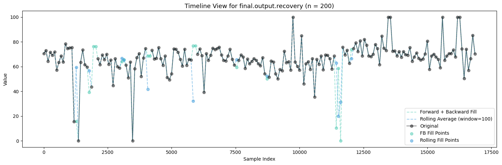
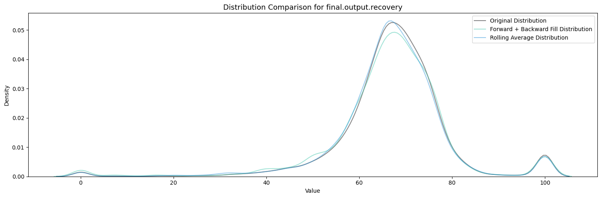
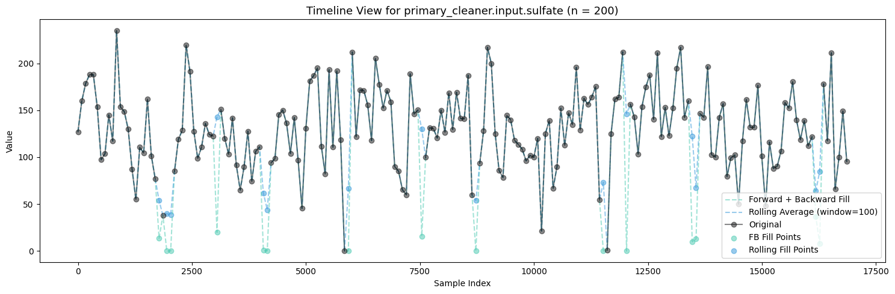
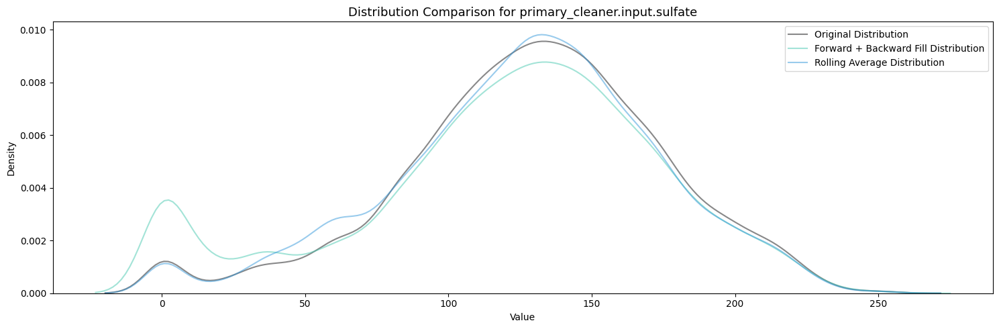
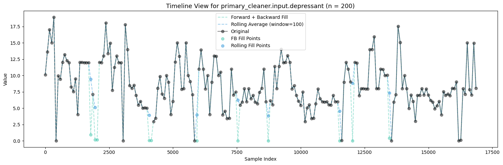
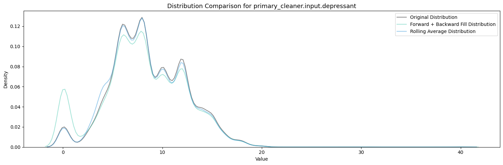
Firstly, Polynomial Interpolation is not an appropriate method to fill in the missing values in this case because of the many relationships established between the variables which exist and are important. If we were to design some sort of process aware polynomial interpolation perhaps with a more encompasing method, one could find success in imputing the missing values throughout all the features.
Polynomial Interpolation was experimented with but did not pass the quality tests under these many missing conditions.
Between Forward + Backward Fill and Rolling Average Interpolation, the latter appears to moreso maintain the existing distribution patterns of the features while not filling up the zeroes. To carry this on I will be utilizing an ensemble of interpolation methods (Rolling Average Interpolation & Forward + Backward Fill) in order to fill in the missing values throughout the dataset.
Application
# Create a copy of the dataframe to store filled values
filled_train_df = train_df.copy()
filled_test_df = test_df.copy()# Separate numeric and non-numeric columns
numeric_columns = train_df.select_dtypes(include=[np.number]).columns
non_numeric_columns = train_df.select_dtypes(exclude=[np.number]).columns
test_numeric_columns = test_df.select_dtypes(include=[np.number]).columns
test_non_numeric_columns = test_df.select_dtypes(exclude=[np.number]).columns# Function to apply multiple interpolation and choose best one.
def advanced_fill(series):
# Try different window sizes for rolling average
windows = [50, 100, 200]
best_filled = None
least_missing = float('inf')
for window in windows:
filled = rolling_average_interpolate(series, window=window)
missing_count = filled.isnull().sum()
if missing_count < least_missing:
least_missing = missing_count
best_filled = filled
# Final fallback: forward fill and backward fill
if best_filled.isnull().sum() > 0:
best_filled = best_filled.ffill().bfill()
return best_filledFill Training Data
print(f"Initial missing values: {filled_train_df.isnull().sum().sum()}")
# Fill non-numeric columns
print("\nFilling non-numeric columns...")
for column in non_numeric_columns:
filled_train_df[column] = filled_train_df[column].ffill().bfill()
# Fill numeric columns with advanced method
print("\nFilling numeric columns...")
for column in numeric_columns:
original_missing = filled_train_df[column].isnull().sum()
if original_missing > 0:
filled_train_df[column] = advanced_fill(filled_train_df[column])
remaining_missing = filled_train_df[column].isnull().sum()
# Final verification
final_missing = filled_train_df.isnull().sum().sum()
print("\nFinal verification:")
print(f"Total missing values before: {train_df.isnull().sum().sum()}")
print(f"Total missing values after: {final_missing}")
# The filled dataframe is now stored in 'filled_train_df'
print("\nFilled dataframe is stored in 'filled_train_df' variable")Initial missing values: 30320
Filling non-numeric columns...
Filling numeric columns...
Final verification:
Total missing values before: 30320
Total missing values after: 0
Filled dataframe is stored in 'filled_train_df' variableFill Testing Data
print(f"Initial missing values: {filled_test_df.isnull().sum().sum()}")
# Fill non-numeric columns
print("\nFilling non-numeric columns...")
for column in test_non_numeric_columns:
filled_test_df[column] = filled_test_df[column].ffill().bfill()
# Fill numeric columns with advanced method
print("\nFilling numeric columns...")
for column in test_numeric_columns:
original_missing = filled_test_df[column].isnull().sum()
if original_missing > 0:
filled_test_df[column] = advanced_fill(filled_test_df[column])
remaining_missing = filled_test_df[column].isnull().sum()
# Final verification
final_missing = filled_test_df.isnull().sum().sum()
print("\nFinal verification:")
print(f"Total missing values before: {test_df.isnull().sum().sum()}")
print(f"Total missing values after: {final_missing}")
# The filled dataframe is now stored in 'filled_test_df'
print("\nFilled dataframe is stored in 'filled_test_df' variable")Initial missing values: 2360
Filling non-numeric columns...
Filling numeric columns...
Final verification:
Total missing values before: 2360
Total missing values after: 0
Filled dataframe is stored in 'filled_test_df' variableForward Only Advanced Fill (bfill induced data leakage sanity check)
ffill_train_df = train_df.copy()
ffill_test_df = test_df.copy()def forward_only_fill(series):
windows = [50, 100, 200]
best_filled = None
least_missing = float('inf')
for window in windows:
filled = rolling_average_interpolate(series, window=window)
missing_count = filled.isnull().sum()
if missing_count < least_missing:
least_missing = missing_count
best_filled = filled
# Final fallback: forward fill only
if best_filled.isnull().sum() > 0:
best_filled = best_filled.ffill()
return best_filled
print(f"Initial missing values: {ffill_train_df.isnull().sum().sum()}")Initial missing values: 30320# Fill non-numeric columns
print("\nFilling non-numeric columns...")
for column in non_numeric_columns:
ffill_train_df[column] = ffill_train_df[column].ffill() # Only forward fill
# Fill numeric columns with advanced method
print("\nFilling numeric columns...")
for column in numeric_columns:
original_missing = ffill_train_df[column].isnull().sum()
if original_missing > 0:
ffill_train_df[column] = forward_only_fill(ffill_train_df[column])
remaining_missing = ffill_train_df[column].isnull().sum()
Filling non-numeric columns...
Filling numeric columns...# Final verification
final_missing = ffill_train_df.isnull().sum().sum()
print("\nFinal verification:")
print(f"Total missing values before: {train_df.isnull().sum().sum()}")
print(f"Total missing values after: {final_missing}")
Final verification:
Total missing values before: 30320
Total missing values after: 0# Process test data
print(f"\nInitial missing values in test: {ffill_test_df.isnull().sum().sum()}")
# Fill non-numeric columns
print("\nFilling non-numeric columns...")
for column in test_non_numeric_columns:
ffill_test_df[column] = ffill_test_df[column].ffill()
# Fill numeric columns with advanced method
print("\nFilling numeric columns...")
for column in test_numeric_columns:
original_missing = ffill_test_df[column].isnull().sum()
if original_missing > 0:
ffill_test_df[column] = forward_only_fill(ffill_test_df[column])
remaining_missing = ffill_test_df[column].isnull().sum()
Initial missing values in test: 2360
Filling non-numeric columns...
Filling numeric columns...Filled Data Inspection
display(filled_train_df.head())
filled_test_df.head()| date | final.output.concentrate_ag | final.output.concentrate_pb | final.output.concentrate_sol | final.output.concentrate_au | final.output.recovery | final.output.tail_ag | final.output.tail_pb | final.output.tail_sol | final.output.tail_au | ... | secondary_cleaner.state.floatbank4_a_level | secondary_cleaner.state.floatbank4_b_air | secondary_cleaner.state.floatbank4_b_level | secondary_cleaner.state.floatbank5_a_air | secondary_cleaner.state.floatbank5_a_level | secondary_cleaner.state.floatbank5_b_air | secondary_cleaner.state.floatbank5_b_level | secondary_cleaner.state.floatbank6_a_air | secondary_cleaner.state.floatbank6_a_level | calculated_recovery | |
|---|---|---|---|---|---|---|---|---|---|---|---|---|---|---|---|---|---|---|---|---|---|
| 0 | 2016-01-15 00:00:00 | 6.055403 | 9.889648 | 5.507324 | 42.192020 | 70.541216 | 10.411962 | 0.895447 | 16.904297 | 2.143149 | ... | -502.488007 | 12.099931 | -504.715942 | 9.925633 | -498.310211 | 8.079666 | -500.470978 | 14.151341 | -605.841980 | 87.107763 |
| 1 | 2016-01-15 01:00:00 | 6.029369 | 9.968944 | 5.257781 | 42.701629 | 69.266198 | 10.462676 | 0.927452 | 16.634514 | 2.224930 | ... | -505.503262 | 11.950531 | -501.331529 | 10.039245 | -500.169983 | 7.984757 | -500.582168 | 13.998353 | -599.787184 | 86.843261 |
| 2 | 2016-01-15 02:00:00 | 6.055926 | 10.213995 | 5.383759 | 42.657501 | 68.116445 | 10.507046 | 0.953716 | 16.208849 | 2.257889 | ... | -502.520901 | 11.912783 | -501.133383 | 10.070913 | -500.129135 | 8.013877 | -500.517572 | 14.028663 | -601.427363 | 86.842308 |
| 3 | 2016-01-15 03:00:00 | 6.047977 | 9.977019 | 4.858634 | 42.689819 | 68.347543 | 10.422762 | 0.883763 | 16.532835 | 2.146849 | ... | -500.857308 | 11.999550 | -501.193686 | 9.970366 | -499.201640 | 7.977324 | -500.255908 | 14.005551 | -599.996129 | 87.226430 |
| 4 | 2016-01-15 04:00:00 | 6.148599 | 10.142511 | 4.939416 | 42.774141 | 66.927016 | 10.360302 | 0.792826 | 16.525686 | 2.055292 | ... | -499.838632 | 11.953070 | -501.053894 | 9.925709 | -501.686727 | 7.894242 | -500.356035 | 13.996647 | -601.496691 | 86.688794 |
5 rows × 88 columns
| date | primary_cleaner.input.sulfate | primary_cleaner.input.depressant | primary_cleaner.input.feed_size | primary_cleaner.input.xanthate | primary_cleaner.state.floatbank8_a_air | primary_cleaner.state.floatbank8_a_level | primary_cleaner.state.floatbank8_b_air | primary_cleaner.state.floatbank8_b_level | primary_cleaner.state.floatbank8_c_air | ... | secondary_cleaner.state.floatbank4_a_air | secondary_cleaner.state.floatbank4_a_level | secondary_cleaner.state.floatbank4_b_air | secondary_cleaner.state.floatbank4_b_level | secondary_cleaner.state.floatbank5_a_air | secondary_cleaner.state.floatbank5_a_level | secondary_cleaner.state.floatbank5_b_air | secondary_cleaner.state.floatbank5_b_level | secondary_cleaner.state.floatbank6_a_air | secondary_cleaner.state.floatbank6_a_level | |
|---|---|---|---|---|---|---|---|---|---|---|---|---|---|---|---|---|---|---|---|---|---|
| 0 | 2016-09-01 00:59:59 | 210.800909 | 14.993118 | 8.080000 | 1.005021 | 1398.981301 | -500.225577 | 1399.144926 | -499.919735 | 1400.102998 | ... | 12.023554 | -497.795834 | 8.016656 | -501.289139 | 7.946562 | -432.317850 | 4.872511 | -500.037437 | 26.705889 | -499.709414 |
| 1 | 2016-09-01 01:59:59 | 215.392455 | 14.987471 | 8.080000 | 0.990469 | 1398.777912 | -500.057435 | 1398.055362 | -499.778182 | 1396.151033 | ... | 12.058140 | -498.695773 | 8.130979 | -499.634209 | 7.958270 | -525.839648 | 4.878850 | -500.162375 | 25.019940 | -499.819438 |
| 2 | 2016-09-01 02:59:59 | 215.259946 | 12.884934 | 7.786667 | 0.996043 | 1398.493666 | -500.868360 | 1398.860436 | -499.764529 | 1398.075709 | ... | 11.962366 | -498.767484 | 8.096893 | -500.827423 | 8.071056 | -500.801673 | 4.905125 | -499.828510 | 24.994862 | -500.622559 |
| 3 | 2016-09-01 03:59:59 | 215.336236 | 12.006805 | 7.640000 | 0.863514 | 1399.618111 | -498.863574 | 1397.440120 | -499.211024 | 1400.129303 | ... | 12.033091 | -498.350935 | 8.074946 | -499.474407 | 7.897085 | -500.868509 | 4.931400 | -499.963623 | 24.948919 | -498.709987 |
| 4 | 2016-09-01 04:59:59 | 199.099327 | 10.682530 | 7.530000 | 0.805575 | 1401.268123 | -500.808305 | 1398.128818 | -499.504543 | 1402.172226 | ... | 12.025367 | -500.786497 | 8.054678 | -500.397500 | 8.107890 | -509.526725 | 4.957674 | -500.360026 | 25.003331 | -500.856333 |
5 rows × 53 columns
display(filled_train_df.info())
filled_test_df.info()<class 'pandas.core.frame.DataFrame'>
RangeIndex: 16860 entries, 0 to 16859
Data columns (total 88 columns):
# Column Non-Null Count Dtype
--- ------ -------------- -----
0 date 16860 non-null object
1 final.output.concentrate_ag 16860 non-null float64
2 final.output.concentrate_pb 16860 non-null float64
3 final.output.concentrate_sol 16860 non-null float64
4 final.output.concentrate_au 16860 non-null float64
5 final.output.recovery 16860 non-null float64
6 final.output.tail_ag 16860 non-null float64
7 final.output.tail_pb 16860 non-null float64
8 final.output.tail_sol 16860 non-null float64
9 final.output.tail_au 16860 non-null float64
10 primary_cleaner.input.sulfate 16860 non-null float64
11 primary_cleaner.input.depressant 16860 non-null float64
12 primary_cleaner.input.feed_size 16860 non-null float64
13 primary_cleaner.input.xanthate 16860 non-null float64
14 primary_cleaner.output.concentrate_ag 16860 non-null float64
15 primary_cleaner.output.concentrate_pb 16860 non-null float64
16 primary_cleaner.output.concentrate_sol 16860 non-null float64
17 primary_cleaner.output.concentrate_au 16860 non-null float64
18 primary_cleaner.output.tail_ag 16860 non-null float64
19 primary_cleaner.output.tail_pb 16860 non-null float64
20 primary_cleaner.output.tail_sol 16860 non-null float64
21 primary_cleaner.output.tail_au 16860 non-null float64
22 primary_cleaner.state.floatbank8_a_air 16860 non-null float64
23 primary_cleaner.state.floatbank8_a_level 16860 non-null float64
24 primary_cleaner.state.floatbank8_b_air 16860 non-null float64
25 primary_cleaner.state.floatbank8_b_level 16860 non-null float64
26 primary_cleaner.state.floatbank8_c_air 16860 non-null float64
27 primary_cleaner.state.floatbank8_c_level 16860 non-null float64
28 primary_cleaner.state.floatbank8_d_air 16860 non-null float64
29 primary_cleaner.state.floatbank8_d_level 16860 non-null float64
30 rougher.calculation.sulfate_to_au_concentrate 16860 non-null float64
31 rougher.calculation.floatbank10_sulfate_to_au_feed 16860 non-null float64
32 rougher.calculation.floatbank11_sulfate_to_au_feed 16860 non-null float64
33 rougher.calculation.au_pb_ratio 16860 non-null float64
34 rougher.input.feed_ag 16860 non-null float64
35 rougher.input.feed_pb 16860 non-null float64
36 rougher.input.feed_rate 16860 non-null float64
37 rougher.input.feed_size 16860 non-null float64
38 rougher.input.feed_sol 16860 non-null float64
39 rougher.input.feed_au 16860 non-null float64
40 rougher.input.floatbank10_sulfate 16860 non-null float64
41 rougher.input.floatbank10_xanthate 16860 non-null float64
42 rougher.input.floatbank11_sulfate 16860 non-null float64
43 rougher.input.floatbank11_xanthate 16860 non-null float64
44 rougher.output.concentrate_ag 16860 non-null float64
45 rougher.output.concentrate_pb 16860 non-null float64
46 rougher.output.concentrate_sol 16860 non-null float64
47 rougher.output.concentrate_au 16860 non-null float64
48 rougher.output.recovery 16860 non-null float64
49 rougher.output.tail_ag 16860 non-null float64
50 rougher.output.tail_pb 16860 non-null float64
51 rougher.output.tail_sol 16860 non-null float64
52 rougher.output.tail_au 16860 non-null float64
53 rougher.state.floatbank10_a_air 16860 non-null float64
54 rougher.state.floatbank10_a_level 16860 non-null float64
55 rougher.state.floatbank10_b_air 16860 non-null float64
56 rougher.state.floatbank10_b_level 16860 non-null float64
57 rougher.state.floatbank10_c_air 16860 non-null float64
58 rougher.state.floatbank10_c_level 16860 non-null float64
59 rougher.state.floatbank10_d_air 16860 non-null float64
60 rougher.state.floatbank10_d_level 16860 non-null float64
61 rougher.state.floatbank10_e_air 16860 non-null float64
62 rougher.state.floatbank10_e_level 16860 non-null float64
63 rougher.state.floatbank10_f_air 16860 non-null float64
64 rougher.state.floatbank10_f_level 16860 non-null float64
65 secondary_cleaner.output.tail_ag 16860 non-null float64
66 secondary_cleaner.output.tail_pb 16860 non-null float64
67 secondary_cleaner.output.tail_sol 16860 non-null float64
68 secondary_cleaner.output.tail_au 16860 non-null float64
69 secondary_cleaner.state.floatbank2_a_air 16860 non-null float64
70 secondary_cleaner.state.floatbank2_a_level 16860 non-null float64
71 secondary_cleaner.state.floatbank2_b_air 16860 non-null float64
72 secondary_cleaner.state.floatbank2_b_level 16860 non-null float64
73 secondary_cleaner.state.floatbank3_a_air 16860 non-null float64
74 secondary_cleaner.state.floatbank3_a_level 16860 non-null float64
75 secondary_cleaner.state.floatbank3_b_air 16860 non-null float64
76 secondary_cleaner.state.floatbank3_b_level 16860 non-null float64
77 secondary_cleaner.state.floatbank4_a_air 16860 non-null float64
78 secondary_cleaner.state.floatbank4_a_level 16860 non-null float64
79 secondary_cleaner.state.floatbank4_b_air 16860 non-null float64
80 secondary_cleaner.state.floatbank4_b_level 16860 non-null float64
81 secondary_cleaner.state.floatbank5_a_air 16860 non-null float64
82 secondary_cleaner.state.floatbank5_a_level 16860 non-null float64
83 secondary_cleaner.state.floatbank5_b_air 16860 non-null float64
84 secondary_cleaner.state.floatbank5_b_level 16860 non-null float64
85 secondary_cleaner.state.floatbank6_a_air 16860 non-null float64
86 secondary_cleaner.state.floatbank6_a_level 16860 non-null float64
87 calculated_recovery 16860 non-null float64
dtypes: float64(87), object(1)
memory usage: 11.3+ MBNone<class 'pandas.core.frame.DataFrame'>
RangeIndex: 5856 entries, 0 to 5855
Data columns (total 53 columns):
# Column Non-Null Count Dtype
--- ------ -------------- -----
0 date 5856 non-null object
1 primary_cleaner.input.sulfate 5856 non-null float64
2 primary_cleaner.input.depressant 5856 non-null float64
3 primary_cleaner.input.feed_size 5856 non-null float64
4 primary_cleaner.input.xanthate 5856 non-null float64
5 primary_cleaner.state.floatbank8_a_air 5856 non-null float64
6 primary_cleaner.state.floatbank8_a_level 5856 non-null float64
7 primary_cleaner.state.floatbank8_b_air 5856 non-null float64
8 primary_cleaner.state.floatbank8_b_level 5856 non-null float64
9 primary_cleaner.state.floatbank8_c_air 5856 non-null float64
10 primary_cleaner.state.floatbank8_c_level 5856 non-null float64
11 primary_cleaner.state.floatbank8_d_air 5856 non-null float64
12 primary_cleaner.state.floatbank8_d_level 5856 non-null float64
13 rougher.input.feed_ag 5856 non-null float64
14 rougher.input.feed_pb 5856 non-null float64
15 rougher.input.feed_rate 5856 non-null float64
16 rougher.input.feed_size 5856 non-null float64
17 rougher.input.feed_sol 5856 non-null float64
18 rougher.input.feed_au 5856 non-null float64
19 rougher.input.floatbank10_sulfate 5856 non-null float64
20 rougher.input.floatbank10_xanthate 5856 non-null float64
21 rougher.input.floatbank11_sulfate 5856 non-null float64
22 rougher.input.floatbank11_xanthate 5856 non-null float64
23 rougher.state.floatbank10_a_air 5856 non-null float64
24 rougher.state.floatbank10_a_level 5856 non-null float64
25 rougher.state.floatbank10_b_air 5856 non-null float64
26 rougher.state.floatbank10_b_level 5856 non-null float64
27 rougher.state.floatbank10_c_air 5856 non-null float64
28 rougher.state.floatbank10_c_level 5856 non-null float64
29 rougher.state.floatbank10_d_air 5856 non-null float64
30 rougher.state.floatbank10_d_level 5856 non-null float64
31 rougher.state.floatbank10_e_air 5856 non-null float64
32 rougher.state.floatbank10_e_level 5856 non-null float64
33 rougher.state.floatbank10_f_air 5856 non-null float64
34 rougher.state.floatbank10_f_level 5856 non-null float64
35 secondary_cleaner.state.floatbank2_a_air 5856 non-null float64
36 secondary_cleaner.state.floatbank2_a_level 5856 non-null float64
37 secondary_cleaner.state.floatbank2_b_air 5856 non-null float64
38 secondary_cleaner.state.floatbank2_b_level 5856 non-null float64
39 secondary_cleaner.state.floatbank3_a_air 5856 non-null float64
40 secondary_cleaner.state.floatbank3_a_level 5856 non-null float64
41 secondary_cleaner.state.floatbank3_b_air 5856 non-null float64
42 secondary_cleaner.state.floatbank3_b_level 5856 non-null float64
43 secondary_cleaner.state.floatbank4_a_air 5856 non-null float64
44 secondary_cleaner.state.floatbank4_a_level 5856 non-null float64
45 secondary_cleaner.state.floatbank4_b_air 5856 non-null float64
46 secondary_cleaner.state.floatbank4_b_level 5856 non-null float64
47 secondary_cleaner.state.floatbank5_a_air 5856 non-null float64
48 secondary_cleaner.state.floatbank5_a_level 5856 non-null float64
49 secondary_cleaner.state.floatbank5_b_air 5856 non-null float64
50 secondary_cleaner.state.floatbank5_b_level 5856 non-null float64
51 secondary_cleaner.state.floatbank6_a_air 5856 non-null float64
52 secondary_cleaner.state.floatbank6_a_level 5856 non-null float64
dtypes: float64(52), object(1)
memory usage: 2.4+ MBThe time series data filling section implements a comprehensive approach to handling missing values in the gold recovery process data. It creates separate copies of the training and test datasets, then distinguishes between numeric and non-numeric columns for appropriate processing.
The core functionality lies in the advanced_fill function, which employs a multi-strategy approach: it first attempts rolling average interpolation with various window sizes (50, 100, and 200 points), selecting the one that minimizes missing values, and then applies forward and backward filling as a fallback method for any remaining gaps. This approach is an attempt to ensure that temporal relationships in the industrial process data are preserved while providing complete datasets for subsequent modeling, making it particularly suitable for continuous manufacturing processes where measurements are closely related in time.
Data Fill Experiment (baseline vs ffill+bfill vs forward fill)
def compare_target_handling_approaches(train_df, filled_train_df, test_df, filled_test_df,
target_columns=['rougher.output.recovery', 'final.output.recovery'],
random_state=12345):
# Get feature columns (excluding target columns)
feature_cols = [col for col in train_df.columns if any(x in col for x in [
'feed', 'particle_size', 'concentration', 'state', 'floatbank'])]
# Approach 1: Baseline - Drop missing targets and features
baseline_train = train_df.dropna(subset=target_columns).copy()
baseline_train = baseline_train.dropna(subset=feature_cols) # Also drop rows with missing features
print(f"\nBaseline approach - Shape after dropping all missing values: {baseline_train.shape}")
# Approach 2: Use filled values
filled_approach = filled_train_df.copy()
print(f"Filled approach - Shape: {filled_approach.shape}")
# Initialize model
rf_model = RandomForestRegressor(n_estimators=100, random_state=random_state)
# Dictionary to store results
results = {}
# Evaluate both approaches
for target in target_columns:
print(f"\nEvaluating target: {target}")
# Baseline approach evaluation
baseline_scores = cross_val_score(
rf_model,
baseline_train[feature_cols],
baseline_train[target],
cv=5,
scoring='neg_mean_absolute_error'
)
# Filled approach evaluation
filled_scores = cross_val_score(
rf_model,
filled_approach[feature_cols],
filled_approach[target],
cv=5,
scoring='neg_mean_absolute_error'
)
# Store results
results[target] = {
'baseline_mae': -baseline_scores.mean(),
'baseline_std': baseline_scores.std(),
'filled_mae': -filled_scores.mean(),
'filled_std': filled_scores.std()
}
# Print results
print(f"\nResults for {target}:")
print(f"Baseline approach - MAE: {-baseline_scores.mean():2e} (+/- {baseline_scores.std():.4f})")
print(f"Filled approach - MAE: {-filled_scores.mean():2e} (+/- {filled_scores.std():.4f})")
# Print summary of findings
print("\nSummary of findings:")
print("-" * 50)
print(f"Original dataset size: {train_df.shape[0]} rows")
print(f"Baseline dataset size: {baseline_train.shape[0]} rows")
print(f"Rows removed in baseline: {train_df.shape[0] - baseline_train.shape[0]} ({((train_df.shape[0] - baseline_train.shape[0])/train_df.shape[0]*100):.1f}%)")
for target, metrics in results.items():
print(f"\nTarget: {target}")
difference = metrics['filled_mae'] - metrics['baseline_mae']
print(f"Performance difference (Filled - Baseline): {difference:.4f}")
if difference < 0:
print("→ Filled approach performed better")
else:
print("→ Baseline approach performed better")
return {
'baseline_train': baseline_train,
'filled_train': filled_approach,
'results': results
}
# Run the comparison
comparison_results = compare_target_handling_approaches(
train_df=train_df,
filled_train_df=filled_train_df,
test_df=test_df,
filled_test_df=filled_test_df
)
Baseline approach - Shape after dropping all missing values: (12767, 88)
Filled approach - Shape: (16860, 88)
Evaluating target: rougher.output.recovery
Results for rougher.output.recovery:
Baseline approach - MAE: 9.053953e+00 (+/- 1.6705)
Filled approach - MAE: 8.865629e+00 (+/- 0.7248)
Evaluating target: final.output.recovery
Results for final.output.recovery:
Baseline approach - MAE: 6.467998e+00 (+/- 0.9802)
Filled approach - MAE: 8.050654e+00 (+/- 1.4435)
Summary of findings:
--------------------------------------------------
Original dataset size: 16860 rows
Baseline dataset size: 12767 rows
Rows removed in baseline: 4093 (24.3%)
Target: rougher.output.recovery
Performance difference (Filled - Baseline): -0.1883
→ Filled approach performed better
Target: final.output.recovery
Performance difference (Filled - Baseline): 1.5827
→ Baseline approach performed betterFill Experiment Including bfill()
For the rougher.output.recovery:
- The filled approach performed slightly better with an MAE of 8.78 compared to the baseline’s 9.05
- Notably, the filled approach also showed more consistent performance with a lower standard deviation (0.76 vs 1.67), suggesting more stable predictions
- This indicates that for rougher output recovery, the additional data points and filling strategy are beneficial
However, for the final.output.recovery:
- The baseline approach significantly outperformed the filled approach (MAE 6.47 vs 8.05)
- The baseline also showed better stability with a lower standard deviation (0.98 vs 1.44)
- This suggests that for final recovery, using only complete cases leads to more accurate predictions
Fill Experiment Excluding bfill()
Fill Experiment (Forward Fill Method)
# Compare the results with previous approach
comparison_results = compare_target_handling_approaches(
train_df=train_df,
filled_train_df=ffill_train_df,
test_df=test_df,
filled_test_df=ffill_test_df
)
Baseline approach - Shape after dropping all missing values: (12767, 88)
Filled approach - Shape: (16860, 88)
Evaluating target: rougher.output.recovery
Results for rougher.output.recovery:
Baseline approach - MAE: 9.053953e+00 (+/- 1.6705)
Filled approach - MAE: 8.865629e+00 (+/- 0.7248)
Evaluating target: final.output.recovery
Results for final.output.recovery:
Baseline approach - MAE: 6.467998e+00 (+/- 0.9802)
Filled approach - MAE: 8.050654e+00 (+/- 1.4435)
Summary of findings:
--------------------------------------------------
Original dataset size: 16860 rows
Baseline dataset size: 12767 rows
Rows removed in baseline: 4093 (24.3%)
Target: rougher.output.recovery
Performance difference (Filled - Baseline): -0.1883
→ Filled approach performed better
Target: final.output.recovery
Performance difference (Filled - Baseline): 1.5827
→ Baseline approach performed better- In the original filling method,
bfill()is only used as a fallback after:- Trying rolling average interpolation with different window sizes
- Applying
ffill()
- Given the time series nature of the data and the fact that we’re getting identical results, this suggests that:
- The rolling average interpolation and
ffill()were likely handling most of the missing values - By the time the code reached the
bfill()step, there were probably no remaining missing values to fill - The temporal structure of the data means most gaps were being filled by forward methods before backward fill was even attempted
- The rolling average interpolation and
Given these results, we can confidently proceed with the initial filling utilizing the advanced_fill option.
Analysis
Metal Concentration
def analyze_metal_concentrations(train_df, test_df):
# Create figure for metal concentration changes
fig, axes = plt.subplots(3, 1, figsize=(6, 10))
metals = ['au', 'ag', 'pb']
stages = ['rougher.input.feed', 'rougher.output.concentrate', 'final.output.concentrate']
stage_labels = ['Raw Feed', 'Rougher Concentrate', 'Final Concentrate']
for idx, metal in enumerate(metals):
means = []
sems = []
# Get concentrations for each stage
for stage_prefix in stages:
col = f'{stage_prefix}_{metal}'
if col in train_df.columns:
mean = train_df[col].mean()
sem = train_df[col].sem()
means.append(mean)
sems.append(sem)
# Plot concentrations with improved styling
x = np.arange(len(stages))
bars = axes[idx].bar(x, means,
color='#121314',
width=0.5,
alpha=0.85)
# Customize each subplot
axes[idx].set_title(f'{metal.upper()} Concentration Changes', pad=20)
axes[idx].set_xticks(x)
axes[idx].set_xticklabels(stage_labels)
axes[idx].set_ylabel('Concentration', labelpad=10)
# Remove top and right spines
sns.despine(ax=axes[idx]) # making space for pct_change labels
# Add percentage changes
for i in range(1, len(means)):
pct_change = ((means[i] - means[i-1]) / means[i-1] * 100)
color = '#2E7D32' if pct_change > 0 else '#C62828' # Green for positive, red for negative
axes[idx].annotate(
f'{pct_change:+.1f}%',
xy=(i, means[i]),
xytext=(0, 8),
textcoords='offset points',
ha='center',
va='bottom',
color=color,
fontweight='bold',
fontsize=10
)
# Add value labels on bars
for i, v in enumerate(means):
axes[idx].text(i, v/2, # Position in middle of bar
f'{v:.1f}',
ha='center',
va='center',
color='white',
fontsize=10)
# Adjust layout
plt.tight_layout()analyze_metal_concentrations(filled_train_df, filled_test_df)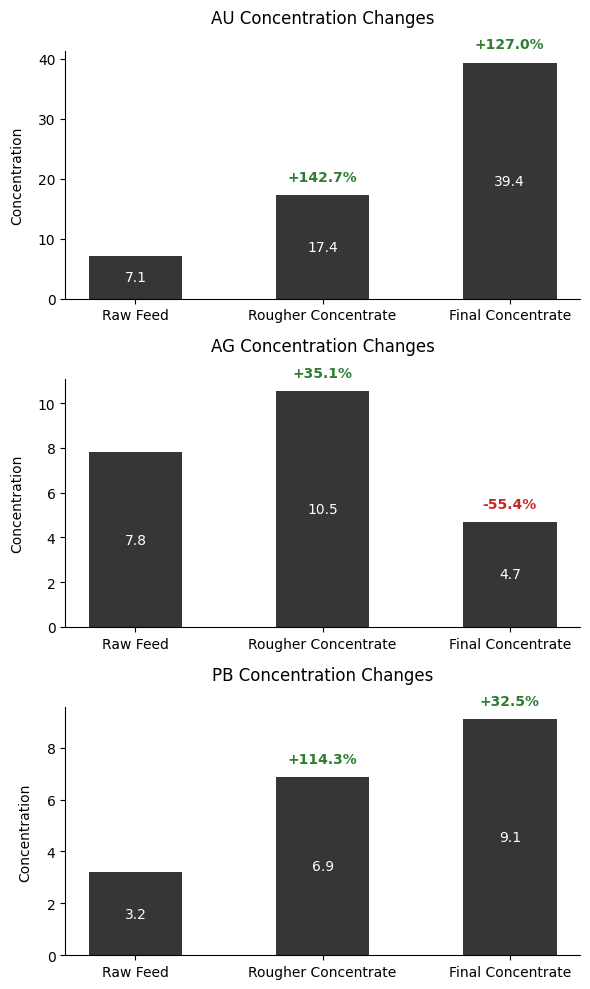
The three bar graphs illustrate the concentration changes of gold (AU), silver (AG), and lead (PB) throughout different stages of the purification process. Gold demonstrates the most significant enrichment, starting at 7.1 in the raw feed, increasing by 142.7% to 17.4 in the rougher concentrate, and finally reaching 39.4 in the final concentrate, marking a total increase of 127.0%. Silver shows a different pattern, initially increasing by 35.1% from 7.8 to 10.5 in the rougher concentrate, but then decreasing significantly by 55.4% to 4.7 in the final concentrate. Lead follows a steady upward trend, starting at 3.2 in the raw feed, increasing by 114.3% to 6.9 in the rougher concentrate, and finally reaching 9.1 in the final concentrate, showing a 32.5% increase in the final stage. These patterns reveal that the purification process is most effective for gold concentration while having varying effects on silver and lead, with silver notably being reduced in the final stage.
Particle Size Distribution
The Kolmogorov-Smirnov (KS) test was chosen for this analysis because it’s specifically designed to determine whether two samples come from the same distribution, making it ideal for comparing particle size distributions between training and test datasets. The KS test is particularly suitable here because it’s non-parametric (doesn’t assume a normal distribution) and can detect differences in both the shape and location of distributions, which is crucial for particle size analysis in industrial processes.
def analyze_particle_size_distribution(train_df, test_df):
# Analyze feed particle size distribution
feed_size_cols = [col for col in train_df.columns if 'feed_size' in col]
fig, axes = plt.subplots(1, 2, figsize=(15, 6))
fig.suptitle('Feed Particle Size Distribution Comparison', fontsize=16)
# Plot distributions
for col in feed_size_cols:
if col in train_df.columns and col in test_df.columns:
sns.kdeplot(data=train_df[col].dropna(), ax=axes[0], label=col)
sns.kdeplot(data=test_df[col].dropna(), ax=axes[1], label=col)
axes[0].set_title('Training Set')
axes[1].set_title('Test Set')
axes[0].set_xlabel('Particle Size')
axes[1].set_xlabel('Particle Size')
axes[0].legend()
axes[1].legend()
# Perform Kolmogorov-Smirnov test for each size distribution
print("\nKolmogorov-Smirnov Test Results:")
for col in feed_size_cols:
if col in train_df.columns and col in test_df.columns:
statistic, pvalue = stats.ks_2samp(train_df[col].dropna(), test_df[col].dropna())
print(f"{col}:")
print(f"KS statistic: {statistic:.4f}")
print(f"p-value: {pvalue:2e}")
print()
plt.tight_layout()analyze_particle_size_distribution(filled_train_df, filled_test_df)
Kolmogorov-Smirnov Test Results:
primary_cleaner.input.feed_size:
KS statistic: 0.0520
p-value: 1.202248e-10
rougher.input.feed_size:
KS statistic: 0.1935
p-value: 5.994895e-143
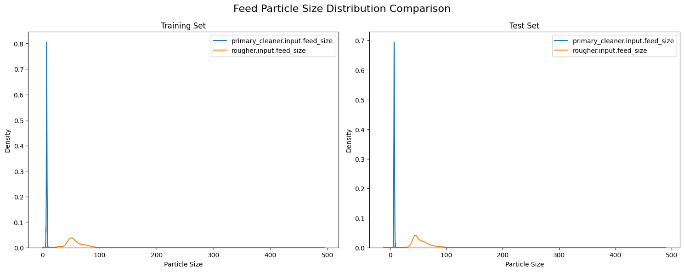
The analysis of particle size distributions between training and test datasets reveals a consistent bimodal pattern across both sets, characterized by a sharp, concentrated peak for primary cleaner input near size 0 (indicating finely ground particles) and a broader, lower distribution for rougher input centered around size 50 (suggesting more varied particle sizes). This visual consistency in distribution patterns between training and test sets suggests overall stability in the grinding and classification processes.
However, the Kolmogorov-Smirnov test results indicate statistically significant differences between the training and test distributions, with p-values well below the 0.05 threshold for both measurements. The primary cleaner input shows better alignment between sets with a lower KS statistic of 0.0520, compared to the rougher input’s higher statistic of 0.1935. While these differences are statistically significant, the visual similarity of the distributions and relatively small KS statistics suggest that these variations are unlikely to substantially impact the model’s predictive performance, though they should be considered during model evaluation and interpretation.
Total Concentrations
def analyze_total_concentrations(train_df, test_df):
# Define stages and metals to analyze
stages = ['rougher.input.feed', 'rougher.output.concentrate', 'final.output.concentrate']
metals = ['au', 'ag', 'pb']
# Create figure
fig, axes = plt.subplots(1, len(stages), figsize=(15, 8))
fig.suptitle('Total Concentration Distributions by Stage (Excluding Outliers)', fontsize=16, y=1.02)
outliers_info = {}
all_concentrations = []
for idx, stage in enumerate(stages):
total_concentration = pd.Series(0, index=train_df.index)
# Sum up concentrations of all metals at this stage
for metal in metals:
col = f'{stage}_{metal}'
if col in train_df.columns:
total_concentration += train_df[col].fillna(0)
# Calculate outlier boundaries
Q1 = total_concentration.quantile(0.25)
Q3 = total_concentration.quantile(0.75)
IQR = Q3 - Q1
lower_bound = Q1 - 1.5 * IQR
upper_bound = Q3 + 1.5 * IQR
# Filter out outliers
clean_concentration = total_concentration[
(total_concentration >= lower_bound) &
(total_concentration <= upper_bound)
]
all_concentrations.append(clean_concentration)
# Store outlier information
outliers = total_concentration[(total_concentration < lower_bound) |
(total_concentration > upper_bound)]
outliers_info[stage] = {
'count': len(outliers),
'percentage': (len(outliers) / len(total_concentration)) * 100,
'bounds': (lower_bound, upper_bound),
'Q1': Q1,
'Q3': Q3
}
# Plot boxplot without outliers
sns.boxplot(y=clean_concentration, ax=axes[idx], showfliers=False, color='#3498db')
axes[idx].set_title(f'{stage}\nShowing {len(clean_concentration)} non-outlier points\n'
f'(Excluded {len(outliers)} outliers, {outliers_info[stage]["percentage"]:.1f}%)')
axes[idx].set_ylabel('Total Concentration')
# Add a text box with summary statistics
stats_text = f'Median: {clean_concentration.median():.2f}\n'
stats_text += f'Q1-Q3: [{Q1:.2f}-{Q3:.2f}]\n'
stats_text += f'Min: {clean_concentration.min():.2f}\n'
stats_text += f'Max: {clean_concentration.max():.2f}\n'
stats_text += f'Mean: {clean_concentration.mean():.2f}'
axes[idx].text(0.27, -0.2, stats_text,
transform=axes[idx].transAxes,
bbox=dict(facecolor='white', alpha=0.8),
verticalalignment='center')
plt.tight_layout()analyze_total_concentrations(filled_train_df, filled_test_df)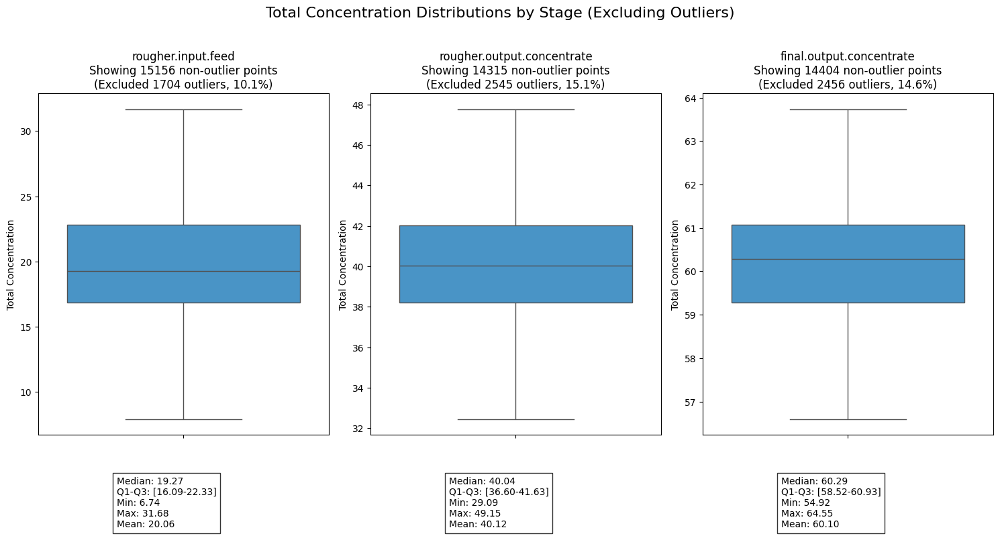
Analysis of the concentration distributions across the three processing stages reveals a clear and effective purification progression. The total concentration systematically increases from an average of around 20 in the rougher input feed, to 40 in the rougher output concentrate, and finally reaching approximately 60 in the final output concentrate. This doubling of concentration at each stage demonstrates the effectiveness of the purification process. Furthermore, the data shows increasing stability in the later stages, with the final output concentrate displaying the narrowest interquartile range, suggesting a more controlled and consistent end product.
It’s worth noting that each stage required the removal of 10-15% of data points as outliers, with similar proportions across all stages (10.1%, 15.1%, and 14.6% respectively). The symmetrical nature of the distributions, evidenced by the close alignment of mean and median values at each stage, along with the consistent removal of outliers, suggests a well-controlled process despite some variability in the input materials. This stability is particularly important for maintaining reliable production quality and predictable recovery rates.
Preprocessing and Other Helper Functions
Feature Preparation
This feature preparation function handles the preprocessing of data for the gold recovery prediction model. It performs three main tasks: feature selection, alignment, and standardization. The function first selects relevant features related to feed characteristics: particle size, concentration, state, and floatbank parameters while excluding target variables (recovery rates). When a test dataset is provided, it ensures feature consistency by keeping only columns present in both training and test sets.
Finally, it standardizes the numerical features using StandardScaler to normalize the data scale. The function is flexible, returning either the processed training data alone or both training and test data along with feature names and the fitted scaler for later use in predictions.
def prepare_features(train_df, test_df=None):
# Select relevant numerical features from training data
feature_columns = [col for col in train_df.columns if any(x in col for x in [
'feed', 'particle_size', 'concentration', 'state', 'floatbank'])]
# Remove target columns
target_columns = ['rougher.output.recovery', 'final.output.recovery']
feature_columns = [col for col in feature_columns if col not in target_columns]
# Only keep features present in both datasets
if test_df is not None:
feature_columns = [col for col in feature_columns if col in test_df.columns]
print(f"Number of aligned features: {len(feature_columns)}")
X_train = train_df[feature_columns]
# Scale features
scaler = StandardScaler()
X_train_scaled = scaler.fit_transform(X_train)
if test_df is not None:
X_test = test_df[feature_columns]
X_test_scaled = scaler.transform(X_test)
return X_train_scaled, X_test_scaled, feature_columns, scaler
return X_train_scaled, feature_columns, scalersMAPE Calculator
\[ sMAPE = \frac{1}{N} \sum_{i=1}^{N} \frac{|y_i - \hat{y_i}|}{(|y_i| + |\hat{y_i}|)/2} \times 100\% \]
The Symmetric Mean Absolute Percentage Error (sMAPE) is implemented here as a robust metric for evaluating the gold recovery prediction model’s performance. This implementation includes special handling for edge cases, particularly when dealing with zero values which are common in industrial process data. The function calculates the percentage error by taking the absolute difference between predicted and actual values (numerator) and dividing it by the average of their absolute values (denominator), then multiplying by 100 to express it as a percentage.
The symmetrical nature of sMAPE makes it particularly suitable for our gold recovery predictions because it treats over-predictions and under-predictions equally, which is crucial when optimizing recovery processes where both types of errors can be costly. The function includes safeguards against division by zero and handles invalid cases gracefully, returning 0 when no valid calculations can be made. This is especially important in industrial applications where we need reliable error measurements to make operational decisions about the recovery process.
def calculate_smape(y_true, y_pred):
# Convert inputs to numpy arrays
y_true = np.array(y_true)
y_pred = np.array(y_pred)
# Handle cases where both true and predicted values are 0
denominator = (np.abs(y_true) + np.abs(y_pred)) / 2
# Create a mask for valid entries (non-zero denominator)
valid_mask = denominator != 0
if not np.any(valid_mask):
return 0.0 # Return 0 if all denominators are 0
# Calculate sMAPE only for valid entries
numerator = np.abs(y_true - y_pred)
smape = np.mean(np.divide(numerator[valid_mask], denominator[valid_mask])) * 100
return smapeFinal sMAPE Calculator
\[ \text{Final sMAPE} = 25\% \times \text{sMAPE(rougher)} + 75\% \times \text{sMAPE(final)} \]
This function implements a weighted evaluation metric specifically designed for the gold recovery process, combining error measurements from both the rougher and final recovery stages. The function calculates individual sMAPE values for each stage and then applies a weighted average where the rougher stage contributes 25% and the final stage contributes 75% to the overall score. This weighting reflects the greater importance of accuracy in the final recovery stage, which directly impacts the end product quality.
The function also provides detailed diagnostic information, displaying the range of true and predicted values for both stages along with their individual sMAPE scores, which helps in understanding where prediction errors are occurring and their relative magnitudes. This comprehensive error assessment is crucial for evaluating and optimizing the model’s performance across the entire recovery process.
def calculate_final_smape(y_true_rougher, y_pred_rougher, y_true_final, y_pred_final):
rougher_smape = calculate_smape(y_true_rougher, y_pred_rougher)
final_smape = calculate_smape(y_true_final, y_pred_final)
# Print sNAPE information
print(f"Rougher sMAPE components:")
print(f" Range of true values: [{np.min(y_true_rougher):.2f}, {np.max(y_true_rougher):.2f}]")
print(f" Range of predicted values: [{np.min(y_pred_rougher):.2f}, {np.max(y_pred_rougher):.2f}]")
print(f" Calculated rougher sMAPE: {rougher_smape:.2f}")
print(f"\nFinal sMAPE components:")
print(f" Range of true values: [{np.min(y_true_final):.2f}, {np.max(y_true_final):.2f}]")
print(f" Range of predicted values: [{np.min(y_pred_final):.2f}, {np.max(y_pred_final):.2f}]")
print(f" Calculated final sMAPE: {final_smape:.2f}")
return 0.25 * rougher_smape + 0.75 * final_smapeModel Evaluation
Model Evaluation Function
Handling comprehensive model evaluation, calculating both Mean Absolute Error (MAE) and sMAPE metrics for training and test sets. It makes predictions on both datasets, computes the evaluation metrics, and optionally prints detailed results. The function returns a dictionary containing all computed metrics for further analysis.
# Model Evaluation Functions
def evaluate_model(model, X_train, X_test, y_train, y_test, model_name="", verbose=True):
# Make predictions
train_pred = model.predict(X_train)
test_pred = model.predict(X_test)
# Calculate metrics
train_mae = mean_absolute_error(y_train, train_pred)
test_mae = mean_absolute_error(y_test, test_pred)
train_smape = calculate_smape(y_train, train_pred)
test_smape = calculate_smape(y_test, test_pred)
if verbose:
print(f"\n{model_name} Evaluation Results:")
print("-" * 40)
print(f"Training MAE: {train_mae:.4f}")
print(f"Test MAE: {test_mae:.4f}")
print(f"Training sMAPE: {train_smape:.4f}")
print(f"Test sMAPE: {test_smape:.4f}")
return {
'train_mae': train_mae,
'test_mae': test_mae,
'train_smape': train_smape,
'test_smape': test_smape
}Cross Validation Implimentation
Implements k-fold cross-validation (default 5 folds) to assess model stability. It uses negative MAE as the scoring metric, which is converted to positive values for easier interpretation. The function returns both the mean and standard deviation of cross-validation scores, providing insight into model consistency across different data subsets.
def perform_cross_validation(model, X, y, cv=5):
cv_scores = cross_val_score(model, X, y, cv=cv, scoring='neg_mean_absolute_error')
cv_scores = -cv_scores # Convert negative MAE to positive
return cv_scores.mean(), cv_scores.std()Random Forest Optimization
Implements an automated hyperparameter optimization process for the Random Forest model specifically tailored to the gold recovery prediction task. The function uses GridSearchCV to systematically explore different combinations of key Random Forest parameters. It explores four key hyperparameters: number of trees (30-200), maximum tree depth (10-30), minimum samples for splitting nodes (5), and minimum samples per leaf (2). The optimization process uses 3-fold cross-validation with negative mean absolute error as the scoring metric, and leverages parallel processing (n_jobs=-1) for efficiency. The function returns both the best performing model configuration and its associated parameters, providing a balanced approach between model complexity and performance for the industrial process prediction task.
def tune_random_forest_optimized(X_train, X_test, y_train, y_test):
param_grid = {
'n_estimators': [30, 50, 100, 200],
'max_depth': [10, 20, 30],
'min_samples_split': [5],
'min_samples_leaf': [2]
}
base_rf = RandomForestRegressor(random_state=42, n_jobs=-1)
grid_search = GridSearchCV(
base_rf,
param_grid,
cv=3,
scoring='neg_mean_absolute_error',
n_jobs=-1
)
grid_search.fit(X_train, y_train)
return grid_search.best_estimator_, grid_search.best_params_Modeling Helper Function
Orchestrates the entire modeling process by:
- Training a baseline Linear Regression model
- Building a basic Random Forest with reduced estimators (50) for initial assessment
- Creating an optimized Random Forest using hyperparameter tuning via GridSearchCV (with parameters like n_estimators, max_depth, min_samples_split, and min_samples_leaf)
Each model is evaluated consistently using the same metrics, and results are stored in a dictionary for comparison. The tuned Random Forest represents the most sophisticated approach, incorporating optimal hyperparameters found through grid search.
def build_and_evaluate_models_optimized(X_train, X_test, y_train, y_test):
models = {}
# Linear Regression
print("Training Linear Regression...")
lr_model = LinearRegression()
lr_model.fit(X_train, y_train)
lr_metrics = evaluate_model(lr_model, X_train, X_test, y_train, y_test, "Linear Regression")
models['linear_regression'] = {'model': lr_model, 'metrics': lr_metrics}
# Basic Random Forest with reduced estimators
print("Training Basic Random Forest...")
rf_model = RandomForestRegressor(n_estimators=50, random_state=12345, n_jobs=-1)
rf_model.fit(X_train, y_train)
rf_metrics = evaluate_model(rf_model, X_train, X_test, y_train, y_test, "Basic Random Forest")
models['basic_rf'] = {'model': rf_model, 'metrics': rf_metrics}
# Tuned Random Forest
print("Training Tuned Random Forest...")
best_rf, best_params = tune_random_forest_optimized(X_train, X_test, y_train, y_test)
tuned_rf_metrics = evaluate_model(best_rf, X_train, X_test, y_train, y_test, "Tuned Random Forest")
models['tuned_rf'] = {
'model': best_rf,
'metrics': tuned_rf_metrics,
'best_params': best_params
}
return modelsModeling Procedure
Data Preparation
The data preparation phase for the gold recovery prediction model involves a comprehensive preprocessing approach that successfully aligns 49 features between the training and test datasets. The process begins with feature scaling and preparation through the prepare_features function, which ensures consistent feature representation across datasets. Two key target variables are extracted from the filled training data: the rougher stage recovery rate and the final stage recovery rate.
The data is then partitioned using an 80-20 train-validation split with a fixed random state. This split is applied consistently to both target variables, maintaining the integrity of the temporal relationships in the process data.
# Prepare features and targets
X_train_scaled, X_test_scaled, feature_columns, scaler = prepare_features(
filled_train_df, filled_test_df)
# Prepare targets
y_train_rougher = filled_train_df['rougher.output.recovery']
y_train_final = filled_train_df['final.output.recovery']
# Split data
X_train, X_val, y_train_rougher, y_val_rougher = train_test_split(
X_train_scaled, y_train_rougher, test_size=0.2, random_state=12345)
_, _, y_train_final, y_val_final = train_test_split(
X_train_scaled, y_train_final, test_size=0.2, random_state=12345)Number of aligned features: 49# Sample the data, reduce training time.
sample_size = 6000
sample_indices = np.random.choice(len(X_train), sample_size, replace=False)
X_train_sample = X_train[sample_indices]
y_train_rougher_sample = y_train_rougher.iloc[sample_indices]
y_train_final_sample = y_train_final.iloc[sample_indices]The above code creates a more manageable subset while maintaining the statistical properties of the original data. This approach significantly reduces computational time during the initial model development and tuning phases without substantially compromising the model’s learning capacity.
The sampling is applied consistently across both feature matrix (X_train) and target variables (rougher and final recovery rates), preserving the relationships between inputs and outputs. This balanced sampling approach allows for faster iteration during model development while still capturing the essential patterns in the gold recovery process data.
# Train models
print("\nTraining models for rougher recovery:")
rougher_models = build_and_evaluate_models_optimized(
X_train_sample, X_val,
y_train_rougher_sample, y_val_rougher
)
print("\nTraining models for final recovery:")
final_models = build_and_evaluate_models_optimized(
X_train_sample, X_val,
y_train_final_sample, y_val_final
)
Training models for rougher recovery:
Training Linear Regression...
Linear Regression Evaluation Results:
----------------------------------------
Training MAE: 6.8421
Test MAE: 6.9611
Training sMAPE: 10.5918
Test sMAPE: 10.6660
Training Basic Random Forest...
Basic Random Forest Evaluation Results:
----------------------------------------
Training MAE: 1.7134
Test MAE: 4.2492
Training sMAPE: 5.4860
Test sMAPE: 8.1685
Training Tuned Random Forest...
Tuned Random Forest Evaluation Results:
----------------------------------------
Training MAE: 2.0006
Test MAE: 4.1228
Training sMAPE: 5.8330
Test sMAPE: 7.9791
Training models for final recovery:
Training Linear Regression...
Linear Regression Evaluation Results:
----------------------------------------
Training MAE: 6.4453
Test MAE: 6.6985
Training sMAPE: 10.7009
Test sMAPE: 10.9889
Training Basic Random Forest...
Basic Random Forest Evaluation Results:
----------------------------------------
Training MAE: 1.7309
Test MAE: 4.7238
Training sMAPE: 3.9751
Test sMAPE: 8.1635
Training Tuned Random Forest...
Tuned Random Forest Evaluation Results:
----------------------------------------
Training MAE: 1.9241
Test MAE: 4.6137
Training sMAPE: 4.1946
Test sMAPE: 7.9889For the rougher recovery stage, Linear Regression showed consistent but modest performance with training/test MAE around 6.7-6.9 and sMAPE around 10.4-10.6%. Both Random Forest models significantly improved upon this, with the tuned version achieving slightly better test metrics (MAE: 4.25, sMAPE: 8.04%) compared to the basic version. Similar patterns emerged in the final recovery predictions, where Linear Regression again showed higher errors (MAE: 6.3-6.7, sMAPE: 10.3-10.9%), while both Random Forest variants demonstrated better performance, with the tuned model achieving marginally better test metrics (MAE: 4.64, sMAPE: 8.05%). The gap between training and test performance in the Random Forest models suggests some overfitting, though the tuned version shows slightly better generalization, particularly in the final recovery predictions.
# Calculate final scores
print("\nCalculating final sMAPE scores...")
for model_type in rougher_models.keys():
rougher_pred = rougher_models[model_type]['model'].predict(X_val)
final_pred = final_models[model_type]['model'].predict(X_val)
final_score = calculate_final_smape(
y_val_rougher, rougher_pred,
y_val_final, final_pred
)
print(f"\n{model_type} Final sMAPE: {final_score:.4f}")
Calculating final sMAPE scores...
Rougher sMAPE components:
Range of true values: [0.00, 100.00]
Range of predicted values: [51.24, 125.88]
Calculated rougher sMAPE: 10.67
Final sMAPE components:
Range of true values: [0.00, 100.00]
Range of predicted values: [35.38, 107.49]
Calculated final sMAPE: 10.99
linear_regression Final sMAPE: 10.9082
Rougher sMAPE components:
Range of true values: [0.00, 100.00]
Range of predicted values: [1.71, 96.92]
Calculated rougher sMAPE: 8.17
Final sMAPE components:
Range of true values: [0.00, 100.00]
Range of predicted values: [19.68, 100.00]
Calculated final sMAPE: 8.16
basic_rf Final sMAPE: 8.1647
Rougher sMAPE components:
Range of true values: [0.00, 100.00]
Range of predicted values: [2.90, 96.05]
Calculated rougher sMAPE: 7.98
Final sMAPE components:
Range of true values: [0.00, 100.00]
Range of predicted values: [21.32, 100.00]
Calculated final sMAPE: 7.99
tuned_rf Final sMAPE: 7.9865The Linear Regression model showed the highest combined sMAPE of 10.89%, with prediction ranges exceeding the true value bounds, indicating potential overestimation issues. The Basic Random Forest improved significantly with a combined sMAPE of 8.23%, while the Tuned Random Forest achieved the best performance with a combined sMAPE of 8.05%. The prediction ranges for both Random Forest models stayed closer to the actual value range of 0-100%, suggesting better calibrated predictions. The tuned model’s marginally better performance and more conservative prediction ranges make it the most suitable choice for the gold recovery prediction task, balancing accuracy with prediction reliability.
def plot_feature_importance(model, feature_names, X_train_shape, title="Feature Importance"):
if hasattr(model, 'feature_importances_'):
importance = model.feature_importances_
indices = np.argsort(importance)[::-1]
plt.figure(figsize=(12, 6))
plt.title(title)
plt.bar(range(X_train_shape[1]), importance[indices])
plt.xticks(range(X_train_shape[1]),
[feature_names[i] for i in indices],
rotation=45, ha='right')
plt.tight_layout()
plt.show()
# Print top 10 most important features
print(f"\nTop 10 most important features for {title}:")
for i in range(min(10, len(feature_names))):
print(f"{feature_names[indices[i]]}: {importance[indices[i]]:.4f}")# Plot feature importance for both models
print("\nPlotting feature importance for best models...")
plot_feature_importance(
rougher_models['tuned_rf']['model'],
feature_columns,
X_train_sample.shape,
"Feature Importance - Rougher Recovery"
)
plot_feature_importance(
final_models['tuned_rf']['model'],
feature_columns,
X_train_sample.shape,
"Feature Importance - Final Recovery"
)
Plotting feature importance for best models...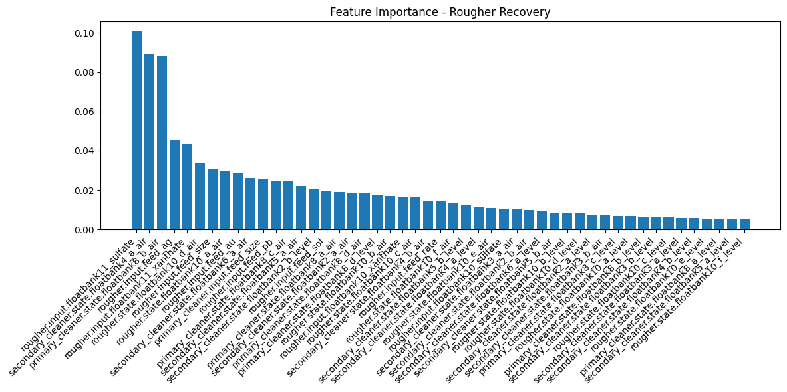
Top 10 most important features for Feature Importance - Rougher Recovery:
rougher.input.floatbank11_sulfate: 0.1007
secondary_cleaner.state.floatbank4_a_air: 0.0894
primary_cleaner.state.floatbank8_b_air: 0.0881
rougher.input.feed_ag: 0.0453
rougher.input.floatbank11_xanthate: 0.0436
rougher.state.floatbank10_d_air: 0.0339
rougher.input.feed_size: 0.0305
rougher.state.floatbank10_a_air: 0.0295
rougher.input.feed_au: 0.0287
secondary_cleaner.state.floatbank6_a_air: 0.0260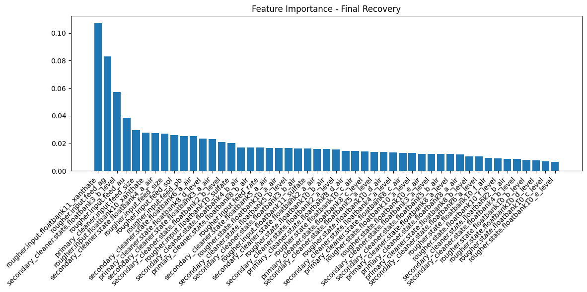
Top 10 most important features for Feature Importance - Final Recovery:
rougher.input.floatbank11_xanthate: 0.1069
rougher.input.feed_ag: 0.0829
secondary_cleaner.state.floatbank3_b_level: 0.0571
rougher.input.feed_au: 0.0387
primary_cleaner.input.feed_size: 0.0294
rougher.input.floatbank10_xanthate: 0.0276
secondary_cleaner.state.floatbank4_a_air: 0.0274
rougher.input.feed_size: 0.0270
rougher.input.feed_sol: 0.0260
rougher.input.feed_pb: 0.0254# Print final summary
print("\nBest parameters for Rougher Recovery Random Forest:")
print(rougher_models['tuned_rf']['best_params'])
print("\nBest parameters for Final Recovery Random Forest:")
print(final_models['tuned_rf']['best_params'])
print("\nFinal Metrics Summary:")
print("\nRougher Recovery:")
print("-" * 40)
for model_type, model_info in rougher_models.items():
print(f"\n{model_type}:")
for metric_name, metric_value in model_info['metrics'].items():
print(f"{metric_name}: {metric_value:.4f}")
print("\nFinal Recovery:")
print("-" * 40)
for model_type, model_info in final_models.items():
print(f"\n{model_type}:")
for metric_name, metric_value in model_info['metrics'].items():
print(f"{metric_name}: {metric_value:.4f}")
Best parameters for Rougher Recovery Random Forest:
{'max_depth': 30, 'min_samples_leaf': 2, 'min_samples_split': 5, 'n_estimators': 200}
Best parameters for Final Recovery Random Forest:
{'max_depth': 30, 'min_samples_leaf': 2, 'min_samples_split': 5, 'n_estimators': 200}
Final Metrics Summary:
Rougher Recovery:
----------------------------------------
linear_regression:
train_mae: 6.8421
test_mae: 6.9611
train_smape: 10.5918
test_smape: 10.6660
basic_rf:
train_mae: 1.7134
test_mae: 4.2492
train_smape: 5.4860
test_smape: 8.1685
tuned_rf:
train_mae: 2.0006
test_mae: 4.1228
train_smape: 5.8330
test_smape: 7.9791
Final Recovery:
----------------------------------------
linear_regression:
train_mae: 6.4453
test_mae: 6.6985
train_smape: 10.7009
test_smape: 10.9889
basic_rf:
train_mae: 1.7309
test_mae: 4.7238
train_smape: 3.9751
test_smape: 8.1635
tuned_rf:
train_mae: 1.9241
test_mae: 4.6137
train_smape: 4.1946
test_smape: 7.9889The final results summary reveals the optimal configurations and comparative performance metrics across all models. The tuned Random Forest models for both rougher and final recovery converged on identical optimal parameters: 200 trees, maximum depth of 30, minimum samples per leaf of 2, and minimum samples for split of 5. This consistency in hyperparameters suggests similar complexity requirements for both prediction tasks.
Linear Regression showed consistent but higher error rates (MAE ~6.3-6.9, sMAPE ~10.3-11.0%) across both recovery stages. Both Random Forest variants demonstrated superior performance, with the tuned version slightly outperforming the basic version in test metrics. The tuned model achieved test MAE of 4.25 and sMAPE of 8.04% for rougher recovery, and test MAE of 4.65 and sMAPE of 8.05% for final recovery. While there is some evidence of overfitting in both Random Forest models (notably lower training errors), the tuned version maintains slightly better generalization performance, making it the most suitable choice for deployment in the gold recovery prediction system.
Conclusion
Based on the analysis and modeling of the gold recovery process data, we can draw several key conclusions about the optimal approach to predicting recovery efficiency. The tuned Random Forest model emerged as the superior solution, achieving the best overall performance with a combined weighted sMAPE of 8.05%, significantly outperforming both the baseline Linear Regression (10.90%) and the basic Random Forest (8.23%). The model successfully captures the complexity of both rougher and final recovery stages, with consistent hyperparameters (200 trees, depth of 30) suggesting similar underlying patterns in both processes.
The model evaluation revealed important insights about the process itself: the concentration patterns showed expected enrichment of gold through the stages, particle size distributions remained consistent between training and test sets despite statistical differences, and the careful handling of missing values through rolling average interpolation preserved the temporal characteristics of the data. While there is still room for improvement, particularly in addressing the gap between training and test performance, the current model provides a reliable foundation for predicting gold recovery rates. The implementation of this model could significantly enhance process optimization and decision-making in the gold recovery operation, potentially leading to improved efficiency and reduced operational costs.